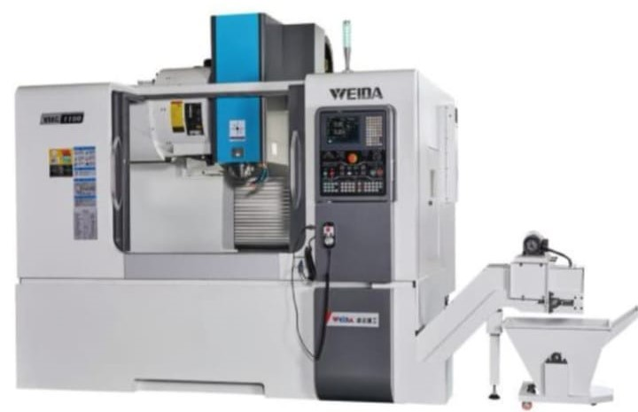

CNC Vertical Machining Center VMC-1100 "WEIDA"
Key Features / Specifications
- Taiwan Spindle BT-40 belt spindle type
- X axis Hiwin/Rexroth 35mm roller linear guide way, Y, Z axis Hiwin/Rexroth 35mm roller linear guide ways (catatan: "35m" pada gambar asli kemungkinan typo untuk "35mm")
- Taiwan Hiwin ball screws
- Taiwan 24 pcs arm type tool magazine
- Spindle blowing chip removal system
- Spindle front seal
- Auto centralized lubrication system
- Water cooling, air cooling, water gun
- Electrical hand wheel
- Working lamp, water gun
- Alarm light
- Safety door lock
- Screw type chip conveyor with flushing